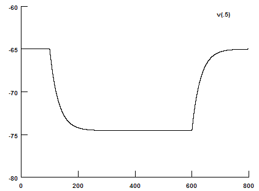

//======================================
// Title: Tutorial #4
// Author: Payne Y. Chang
// File Name: Main.hoc
//======================================
// Display panels
load_file("nrngui.hoc") // Display main menu
load_file("RunControl.hoc") // Display run control
load_file("VGraph.hoc") // Display v plot
load_file("ParameterControl.hoc") // Display parameter control
//======================================
// soma
create soma // Create soma
// Set properties
soma {
nseg = 1 // Number of segments = 1
diam = 100 // Diameter [um]
L = 100 // Length [um]
Ra = 100 // Axial risistance [ohm-cm]
cm = 1 // Capacitance of membrane [uF/cm2]
insert pas // Insert passive properties
g_pas = 1/30000 // [S/cm2]. Tau = 30 ms
e_pas = -65 // Reversal potential. [mV]
}
R = 1/soma.g_pas // Resistance [ohm.cm^2]
SurfaceArea = soma.diam*PI*soma.L // Surface Area [um^2]
print "Surface Area = ", SurfaceArea, " (um^2)"
print "R = ", R, " (ohm cm^2)"
print "Resistance = ", R/(SurfaceArea*1e-8)*1e-6, " (Mega ohm)"
//======================================
// Set one current clamp electrode
objectvar electrode
soma electrode = new IClamp(0.5)
iInjected = -0.1 // Injected Current [nA]
electrode.del = 100 // Delay [ms]
electrode.dur = 500 // Duration [ms]
electrode.amp = iInjected // Amplitude [nA]
//======================================
// Set recording vectors
objref tVector, vVector
tVector = new Vector() // Time
vVector = new Vector() // Voltage
tVector.record(&t) // Record t
vVector.record(&soma.v(0.5)) // Record v at soma
//======================================
// Codes for calculating Rin
proc calculate_Rin() {
index1 = tVector.indwhere(">=", 50) // Get the index of the baseline
index2 = tVector.indwhere(">=", 100) // Get the index of the baseline
v1 = vVector.mean(index1, index2-1) // Voltage at baseline
index1 = tVector.indwhere(">=", 550) // Get the index of the response
index2 = tVector.indwhere(">=", 600) // Get the index of the response
v2 = vVector.mean(index1, index2-1) // Voltage at steady state
// Display Rin information
print "Rin = ", (v2-v1)/iInjected, " (Mega Ohm)"
}
Voltage Trace
